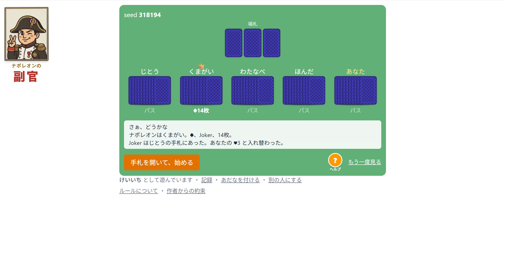
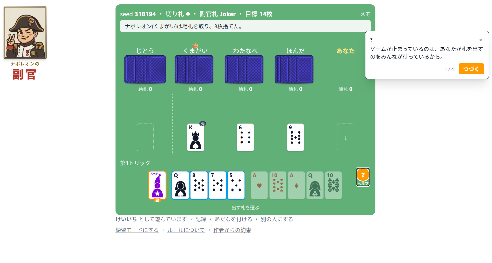
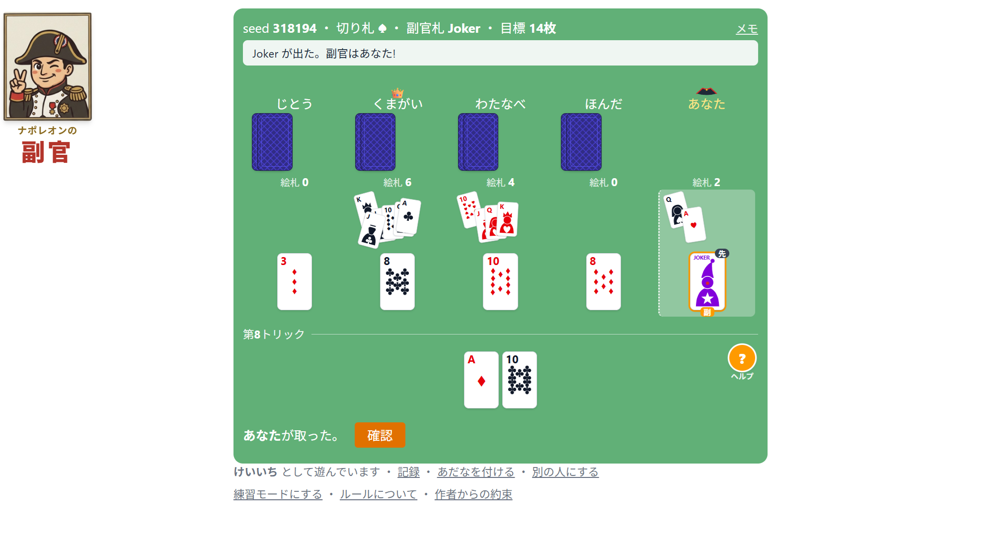
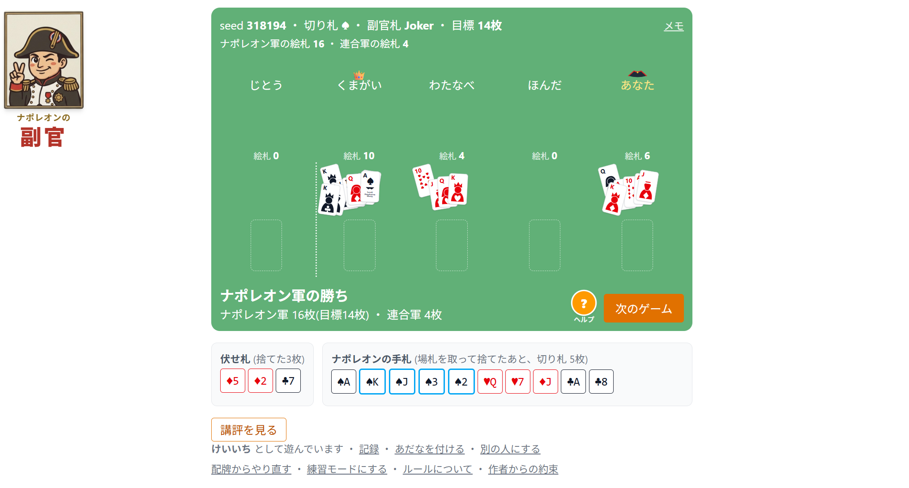
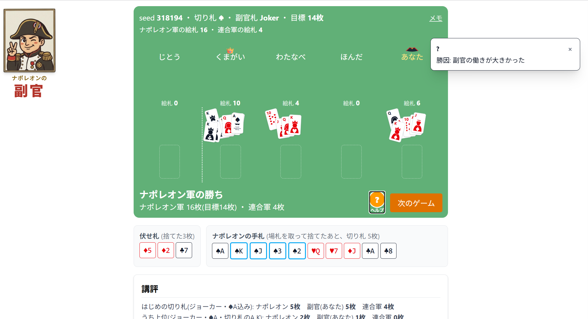

ナポレオンの副官
高校ヨット部の合宿の夜、先輩たちが興じていたナポレオンを、コンピュータ相手にどうぞ。
5人で遊ぶトランプ「ナポレオン」を、コンピュータ4人相手にひとりで遊べるようにしました。配牌のたび、あなたは正体を隠した「副官」としてナポレオンを支えます。
半公開サーバが脆弱なので個別にご案内しています。ご希望の方はお問い合わせください。
高校ヨット部の合宿の夜、先輩たちが興じていたナポレオンを、コンピュータ相手にどうぞ。
5人で遊ぶトランプ「ナポレオン」を、コンピュータ4人相手にひとりで遊べるようにしました。配牌のたび、あなたは正体を隠した「副官」としてナポレオンを支えます。
半公開サーバが脆弱なので個別にご案内しています。ご希望の方はお問い合わせください。





同じ配牌をもう一度見るための seed 表示、対局後の講評つき。細かいルールはゲーム内の「ルールについて」にまとめてあります。
高校時代はヨット部で、週末はいつも宮城・七ヶ浜町で合宿でした。高校生なので宴会はできませんでしたが、先輩たちは夜ごとナポレオンに興じていて、その情景を思い出しながら作りました。
ゲーム内の次藤・熊谷・渡辺・本多は、当時の先輩たちの口癖を思い出しながら名付けた、少し性格付けのあるPCです。強気だったりいい加減だったりするナポレオンを、正体を隠しながら支えてやってください。
― 店主 佐々木
遊んでみたい方は、こちらからご相談ください。